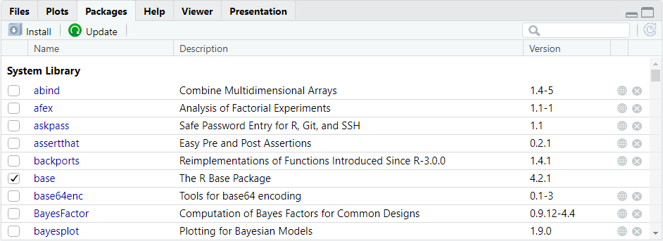
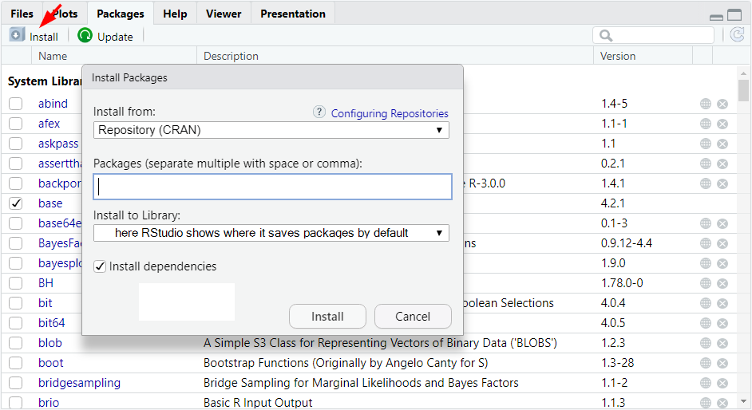

# install an R package
install.packages("packageName")R Packages
Base R comes equipped with a range of useful functions. However, we might frequently find ourselves in situations in which base R does not provide solutions to our problems, or where the provided solutions are cumbersome. There is a solution to this problem: additional R packages.
What are R packages?
R packages are a collection of R functions and/or R objects (such as data sets) not included in base R. They have been developed and are being maintained by people (often other academics) who believe that their package allows R users to do something that base R cannot do or to make life easier for users compared to using base R alone.
R is modular in the sense that we can add as many packages to base R as we want. Due to the large R community, chances are that if you look for something specific there is an R package for it.
Most R packages are available from CRAN (Comprehensive R Archive Network). CRAN is a repository for R packages that ensures that the packages meet certain standards such as being propely documented, interfering as little as possible with other packages, being (largely) platform-independent and so on.
Installing R packages
In order to use an R package, we first need to install it on our computer. Installing an R package means that we download it from CRAN. We do not need to do anything else because R will do the actual installing on its own. Once we have downloaded an R package, our instance of R knows that this package exists on our machine. We can then find functions from that package when searching for functions using the ?? operator.
When using RStudio, we can install R packages in two ways. The first is calling the function install.packages and feeding it the name of the R package we want to install as a character string (or as a character vector if we want to install multiple packages). Here is what the syntax looks like:
Alternatively, RStudio allows us to install packages using the Packages tab in the Utility & Help (bottom right) section of the interface. When we go to this tab, R will show us all the packages we have currently installed (see below). If we do not yet have any additional packages, we will only see packages that are part of base R such as base, datasets, and methods.

Klicking on the Install button will open a menu that allows us to select the package we are interested in for installation (see below).

The first field is called “Install from”. The default for the installation of packages is to install them from CRAN (this is sensible, we are rarely - if at all - going to install packages not contained in CRAN).
In the next field, called “Packages”, we can enter the name of the package we want to install. In case we want to install multiple packages, we can separate their names with space or comma. Note that RStudio has an auto-complete feature, here. That is, if we enter one or more letters or numbers, RStudio will list all packages whose names start with (or consist of) what we have entered so far.
Under “Install to Library”, RStudio shows the folder, in which our R packages will be saved (it depends solely on where you installed R on your computer). Once, we hit the “Install” button on the bottom of the menu, R will install the selected packages.
On the bottom of the menu, there is a check-box asking whether RStudio should install dependencies. This box ix checked by default, and we should leave it that way. The reason is that some R packages depend on other R packages to run properly because they use some of the functions those other packages provide. Those other packages might themselves require other packages to run properly.
Installing dependencies, thus, is necessary to ensure that we can actually use the functions that an R package offers us.
Let’s now look at an example, in which we are interested in installing the R package psych because it contains some functions that are particularly interesting to psychologists. We can either install it using R code, which would look like this:
# install the R package psych
install.packages('psych')Alternatively, we can install the package psych by going to the Packages tab of RStudio’s Utility & Help section, and entering its name in the Install menu (see below).

Irrespective of how we tell R to install the psych package, R will now download the package and unpack it in the folder where R keeps all the packages. We can verify that R has installed the new package by inspecting the output in the console. There, R will provide some information, including the statement that the package we wanted to install has been ‘successfully unpacked’. In our example, it looks as follows:

Installing R packages is something we need to do only once (the exception is when there is a major update of R - then we need to reinstall all packages).
Therefore, it is not a good idea to include the install.packages function in an R script. If we do, then R will - without need - reinstall packages whenever we run the script.
There may be some cases, in which we may want to include the installation of packages in our R script, for example, when we publish our script as part of Open Data and want to make sure that our code is 100% reproducible.
A common and sensible practice in such cases is to use commenting to include the R code for installing the packages but have R ignore it while running the script. Interested parties who want to run our script, can then simply uncomment the respective lines of code to install the packages.
Loading installed libraries
In order to actually use the objects and/or functions included in a package, installing it is not sufficient. We also need to load the package. Once we load an R package, we can access its content until we close RStudio. This also means that we need to load R packages again after closing and restarting RStudio.
We can load R packages using the function library which takes the name of an installed R package as its function argument either as is or as a character string (calling the package name as is might be preferable because of RStudio’s code completion feature).
For example, if we wanted to us the psych package we installed in the example above, we would need to load it using the library function. The syntax looks as follows:
# load the library psych
library(psych)
# alternative code that does the same
library('psych')Running either line of code will load the R package. If the package we are interested in has dependencies, loading it will also prompt R to load all other packages necessary for the focal package to run properly. One the package (and potentially its dependencies) are loaded, we can start using its contained functions and/or objects.
Updating libraries
Just as R and RStudio, (most) R packages are regularly updated. Using an outdated version of an R package is usually not a big problem. However, in some cases, it may lead to our code not running properly. This can happen whenever a function depends on functions from base R or another R package that have been modified such they have a different name or that their output format has changed.
In some instances, R will let us know that our packages are outdated, namely if a package was built in an older version of R than the one we are currently running on our machine. If we load a library that was built using a previous R version, we will receive a warning in the console upon loading is with the libraries function.
Just as error messages, warnings are displayed as red font in the console. However, while error messages tell us that the code we entered did not work, the code does run properly when we receive a warning. Warnings are a way for R to tell us that we may potentially - but not necessarily - run into problems.
RStudio has a quality-of-life feature that allows us to check whether there are updates available for the R packages we have currently installed. In the Packages tab of the Utility & Help section, there is a button called Update (see below).

Klicking on the Update button will open a list of packages for which a more recent version is available. We can then select those packages we would like to update or tell RStudio to update all of them. once we have selected at least one package that requires updating, we can hit the button labelled Install Updates.
What R will do is simply reinstall the package’s current version and overwrite the old version on our computer. In case all of our packages are up to date, RStudio will show us a message stating so.
Conflicts between packages
A final thing to consider when using R packages is that sometimes there can be conflicts between them, namely when they contain objects with identical names.
For example, both the ggplot2 package, which many people use for plotting in R has a function called alpha (regulates colour transparency in plots). So does the psych package (computes Cronbach’s \(\alpha\)). If we load packages with such name conflicts, one of them will dominate the other.
When loading a package that contains objects and/or functions with the same name as functions and/or objects of packages already loaded, R will ‘mask’ similarly named objects from already loaded packages. If a function or object is masked, we will not be able to call it in the usual manner because R will instead call the funciton or object of similar name in the most recently loaded package.
For example, if we first load the package psych, and then load ggplot2, R will tell us that the function alpha has been masked from psych. If we call alpha now, R will refer to the ggplot2 version of alpha and assume that we want to manipulate the transparency of a colour. Has we first loaded ggplot2 and then loaded psych, R would instead tell us that alpha has been masked from ggplot2, and calling the function would allow us to compute Cronbach’s \(\alpha\).
The question now is: what if I need both functions or objects sharing the same name? The answer is that there we can specify which package we are calling a function from. This is called namespacing. To do so, we need to precede the function name with the package name and separate the two using double colons. The function of the double colon is not unlike that of the $ operator. It tells R where to look for the function we are interested in. The syntax looks as follows:
# call function from package by namespacing it
packageName::functionName(arguments)For example, when loading both the ggplot2 and psych packages, we can call both functions using the syntax above. Doing so will ensure that our code will run free of bugs no matter in which order we load the packages.
# call function alpha from ggplot2 and set the
# transparency of the colour 'blue' to 50% (0.5)
ggplot2::alpha('blue', alpha = 0.5)
# call the function alpha from psych and
# compute Cronbach's alpha for a numeric
# matrix containing responses to a scale
psych::alpha(x = data_matrix)Fun fact: The notation with double colons also allows us to call functions from packages that are not currently loaded.